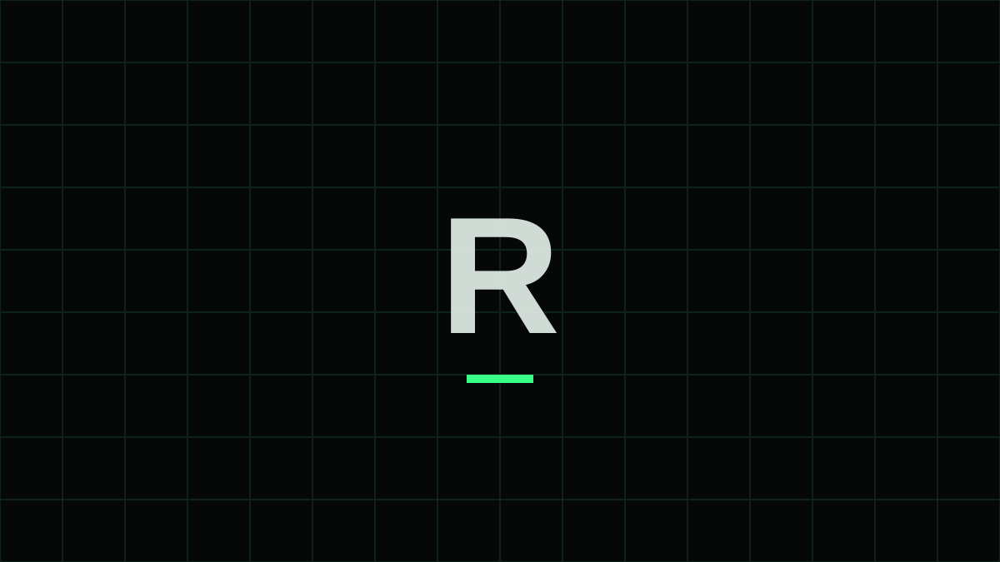

Öne çıkan özellikler
- Tek bir içerik dosyasından Python ile üretilen Türkçe ve İngilizce sayfalar
- Çerez, analitik ve dış yazı tipi yok
- Canonical, hreflang, sitemap, Open Graph ve yapılandırılmış veri
- Headless Chromium ile bağlantı, mobil taşma ve konsol hatası testleri